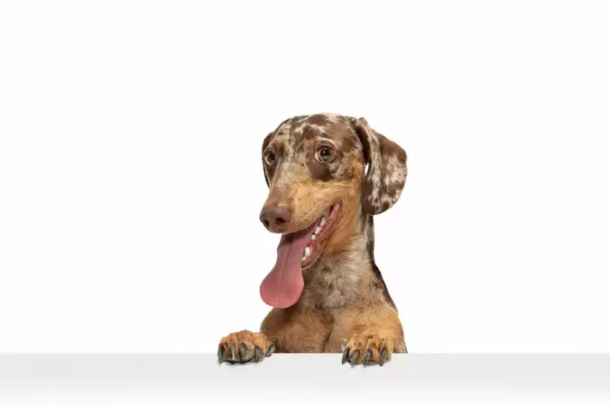

Agora você verá 5 motivos (mais um extra) para ter um cachorro🐶
Tempo de leitura: 5 minutos

1 - Menos ansiedade
Ah, a ansiedade... esse sentimento que parece nos perseguir como uma sombra! Mas não tema, meu amigo de quatro patas está aqui para te salvar! É cientificamente comprovado que ter um cachorro pode diminuir a ansiedade. Eles são como pequenos terapeutas peludos, prontos para lhe dar uma lambida na cara nos momentos mais estressantes. Com seu amor incondicional e entusiasmo contagiante, os cães nos lembram de viver o momento presente, esquecendo as preocupações do futuro. Então, se você está se sentindo ansioso, apenas abrace seu fiel companheiro canino e deixe as preocupações irem embora - ou pelo menos esqueça delas por um tempo enquanto tenta desviar da lambida inevitável no nariz!
2 - Redução de tempo ocioso
Você já se pegou olhando para o teto, sem fazer nada além de contar as rachaduras? Bem, meu amigo, isso é tempo ocioso, e seu cachorro está aqui para resgatá-lo desse mar de monotonia! Com um cachorro ao seu lado, adeus ao tédio! Eles são mestres em inventar brincadeiras malucas e atividades divertidas para mantê-lo ocupado. Desde buscar a bola pela milésima vez até perseguir o próprio rabo (sim, eles ainda fazem isso!), cada momento com seu amigo peludo é uma aventura emocionante. Então, se você está entediado, basta pegar a coleira e sair para uma caminhada ou inventar um novo jogo de esconde-esconde. Com um cachorro ao seu lado, o tempo ocioso é coisa do passado!
3 - Solidão? Nunca mais!
Solidão? Nunca mais! Com um cachorro ao seu lado, você terá um amigo leal para todas as ocasiões. Eles não apenas enchem sua casa com amor e risadas, mas também estão sempre lá para ouvir suas preocupações mais profundas (mesmo que não entendam uma palavra do que você está dizendo!). Seja compartilhando uma refeição, assistindo a um filme ou simplesmente curtindo um momento tranquilo juntos, seu cachorro será seu parceiro incondicional, garantindo que a solidão nunca mais faça parte de sua vida. E, vamos encarar, quem precisa de humanos quando você tem um companheiro peludo tão incrível?
4 - Diversão pra toda hora!
Prepare-se para a diversão sem fim! Com um cachorro ao seu lado, cada dia é uma aventura esperando para acontecer. Desde brincadeiras enérgicas no parque até sessões de carinho no sofá, seu cachorro está sempre pronto para animar o dia com sua energia contagiante e sua disposição para qualquer loucura. E não se engane, a diversão não tem hora marcada quando se trata de cachorros! Eles são especialistas em transformar os momentos mais mundanos em oportunidades de diversão. Então, se você está procurando por uma dose extra de alegria em sua vida, basta pegar a guia e sair para uma aventura com seu fiel amigo de quatro patas. Com um cachorro ao seu lado, a diversão está garantida a cada latido!
5 - Diminui o sedentarismo
Hora de deixar o sedentarismo para trás e abraçar um estilo de vida mais ativo - e quem melhor para te ajudar nessa jornada do que seu adorável amigo peludo? Ter um cachorro é como ter seu próprio personal trainer de quatro patas, sempre pronto para te motivar a sair do sofá e se movimentar. Com suas caminhadas animadas, corridas pelo parque e jogos intermináveis de busca, seu cachorro transforma o exercício em uma atividade divertida e emocionante. E o melhor de tudo? Eles nunca reclamam de ir para a academia ou de fazer mais uma volta no quarteirão! Então, se você está cansado de ser um coach potato, pegue a coleira e deixe seu cachorro te guiar pelo caminho da atividade física. Com seu companheiro peludo ao seu lado, o sedentarismo não tem vez!
6 - EXTRA!
Esse motivo é o que vai tornar definitivo a sua escolha de um novo pet.. A FOFURA! Não acredita em mim? Dê uma olhada no vídeo atrelado logo abaixo
Se depois de todos esses motivos e mais o extra, você ainda não se decidiu de fato se quer ter um cachorro, então te darei um motivo para se ter um gato, confira logo abaixo 👇